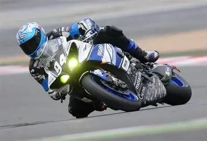
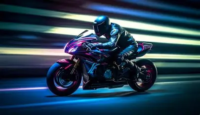

Racing bikes are designed for speed, performance, and efficiency. They feature lightweight frames, thin tires, and aerodynamic designs that help riders go faster with less effort.

Professional racing bikes are commonly used in competitions like road races and track events. Materials such as carbon fiber and aluminum are used to reduce weight while maintaining strength.